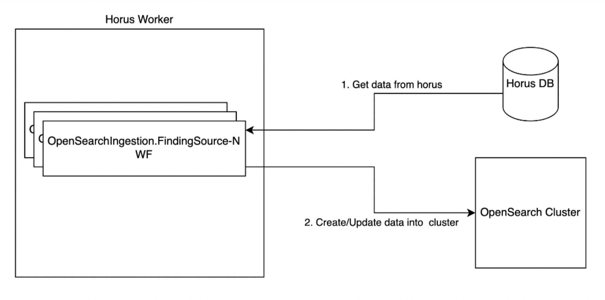

Problem Statement
Oracle OCI's Security Central ingests several million findings per day from it's scanners. The ingested data is stored in a relational database which is used to power Security Central UI; however, sorting, filtering, and paging data with millions of rows is not a scalable option. This can cause delays and customer pain.
Solution
Ingest data and push it to OpenSearch cluster through implemnted workflows and helpers. Security Central's data can be more easily processed by searching and filtering the data in OpenSearch. OpenSearch is an open-source project which is designed to faciliate searching, analyzing, and visualizing data. To utilize this, the data from Security Central's database must be ingested into OpenSearch.
Design
Ingestion workflow per finding source shall run every 5 minutes and look for updated data over the last 10 minutes and pushes/updates the data into OpenSearch cluster.
Results
Ingested and populated several thousand findings from database into OpenSearch for customers and teams to use.